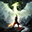

 Dragon Age Inquisition
Detalles
 |
|
| Tiempo de juego | No Jugado |
| Última actividad | Nunca |
| Añadido | 3/30/2025 12:13:47 |
| Modificado | 4/12/2025 17:48:34 |
| Estado de finalización | Not Played |
| Librería | Playnite |
| Fuente | 2TB GAS |
| Plataforma | PC (Windows) |
| Fecha de lanzamiento | 6/4/2020 |
| Puntuación de la Comunidad | 74 |
| Puntuación de la Crítica | 85 |
| Puntuación de usuario | |
| Género | Acción Aventura Estrategia Rol |
| Desarrollador | BioWare |
| Editor | Electronic Arts |
| Característica | Compat. Total Con Mando Cooperativo Cooperativo En Línea Cromos De Logros De Multijugador Un Jugador |
| Enlaces | Punto de encuentro Discusiones Guías Noticias Página de la tienda PCGamingWiki Logros |
| Tag | Acción Ambientales Aventura Buena trama Combate Contenido sexual Dragones Estrategia Fantasía Gran banda sonora Las elecciones importan LGBTQ+ Multijugador Mundo abierto Personalización de personajes Protagonista femenina Rol Rol de acción Tercera persona Un jugador |
Descripción
Cuando el cielo se abre y el caos se impone, el mundo necesita ayuda. Conviértete en la salvación de Thedas en Dragon Age: Inquisition – Edición Juego del año. Como miembro de la Inquisición, tu tarea es salvar el mundo de sí mismo. Pero el camino que tienes por delante está lleno de decisiones difíciles. Thedas es una tierra de conflictos. Las facciones luchan constantemente entre sí incluso aunque una invasión demoníaca más grande ha comenzado. ¿Y tú? Tú y tu grupo de campeones sois los únicos que podéis resistirlo. Te toca a ti dirigirlos... o caer.
Una narrativa fascinante y basada en las decisiones — No solo decidirás a quién enviar a cada batalla de Inquisition; también tomarás decisiones importantes que afectarán al futuro de Thedas. Cada elección tiene su peso y tus acciones pueden llevar a una gran variedad de resultados. Inquisition es un viaje muy personalizado, en el que un movimiento equivocado podría poner en marcha una serie de acontecimientos que alteren los aspectos físicos del mundo. Descubre un Thedas —y unos héroes— verdaderamente únicos.
Un mundo enorme por descubrir — El mundo de Thedas nunca había sido tan grande ni había estado tan lleno de detalles; prepárate para explorar un extenso territorio. Encuentra fortalezas enemigas que podrás saquear. Revela cuevas ocultas llenas de criaturas al acecho. Thedas es enorme y peligroso, pero desentrañar sus secretos puede suponer la diferencia entre la victoria y la derrota.
Intensos combates estratégicos — No hay una forma incorrecta de jugar a Dragon Age: Inquisition... mientras que no te maten. Por suerte, la vista estratégica opcional te ofrece una posición privilegiada sobre la batalla. El tiempo se detiene mientras tomas decisiones en esta vista, pero si no es tu estilo, puedes lanzarte al ataque bajo una lluvia de disparos de ballesta.
La Edición Juego del año incluye:
DLC Fauces de Hakkon
Descubre el destino del último Inquisidor y del poderoso dragón que cazó.
DLC El descenso
Surca las profundidades y descubre la fuente de misteriosos terremotos que amenaza Thedas.
DLC Intruso
Decide el destino final de la Inquisición a medida que surgen nuevas amenazas.
Una narrativa fascinante y basada en las decisiones — No solo decidirás a quién enviar a cada batalla de Inquisition; también tomarás decisiones importantes que afectarán al futuro de Thedas. Cada elección tiene su peso y tus acciones pueden llevar a una gran variedad de resultados. Inquisition es un viaje muy personalizado, en el que un movimiento equivocado podría poner en marcha una serie de acontecimientos que alteren los aspectos físicos del mundo. Descubre un Thedas —y unos héroes— verdaderamente únicos.
Un mundo enorme por descubrir — El mundo de Thedas nunca había sido tan grande ni había estado tan lleno de detalles; prepárate para explorar un extenso territorio. Encuentra fortalezas enemigas que podrás saquear. Revela cuevas ocultas llenas de criaturas al acecho. Thedas es enorme y peligroso, pero desentrañar sus secretos puede suponer la diferencia entre la victoria y la derrota.
Intensos combates estratégicos — No hay una forma incorrecta de jugar a Dragon Age: Inquisition... mientras que no te maten. Por suerte, la vista estratégica opcional te ofrece una posición privilegiada sobre la batalla. El tiempo se detiene mientras tomas decisiones en esta vista, pero si no es tu estilo, puedes lanzarte al ataque bajo una lluvia de disparos de ballesta.
La Edición Juego del año incluye:
- Juego base
- Armadura, montura con armadura y arsenal de Llamas de la Inquisición
- Cofres de Dragon Age multijugador Edición Deluxe
- Trono de Feudo Celestial, halla del venado rojo y unicornio de la ciénaga
- Paquete de contenido descargable Fauces de Hakkon
- Paquete de contenido descargable El descenso
- Paquete de contenido descargable Intruso
- Despojos de los avvaritas: 5 monturas nuevas, 2 nuevos conjuntos de armadura y nuevas opciones para personalizar tu base en Feudo Celestial.
- Despojos de los qunari: una montura de guerra con armadura, conjuntos de armadura nuevos —incluido uno al estilo de los arishok— y objetos de Feudo Celestial.
DLC Fauces de Hakkon
Descubre el destino del último Inquisidor y del poderoso dragón que cazó.
DLC El descenso
Surca las profundidades y descubre la fuente de misteriosos terremotos que amenaza Thedas.
DLC Intruso
Decide el destino final de la Inquisición a medida que surgen nuevas amenazas.